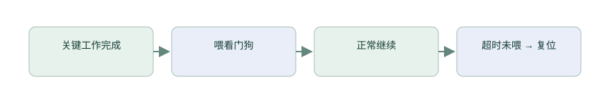

系统运行：看门狗、实时时钟、保存与低功耗
程序能持续响应以后，还需要知道它卡住时怎样恢复，断电后哪些数据还在，以及没有工作时怎样减少耗电。先从“主循环再也走不到下一轮”这个问题开始。
看门狗与故障恢复是其他嵌入式项目也应掌握的知识。当前手表确实使用独立看门狗、实时时钟和睡眠；本篇解释它们的用途，完成后回到 裸机逻辑综合，为裸机部分收尾。
第 1 节 · 程序卡住了，谁还能发现？
主循环卡在某个等待里以后，可能再也没有机会调用自己的“检查是否卡住”函数。需要另一个持续计数的硬件：程序定期重新装入它的计数，如果长时间没有更新，它就触发复位。这就是看门狗。
定期更新计数俗称“喂狗”。这个词对应一个具体动作：在规定时间内写入刷新操作，让看门狗重新开始等待。它不检查业务结果，只检查刷新是否发生；因此喂狗的位置决定它到底保护什么。

例如把刷新放在定时中断里，主循环即使永久卡住，中断也可能照常喂狗，故障便不会被发现。更合适的是确认需要保护的工作都取得进展，再允许刷新；超过期限没有进展，让硬件复位，并在重新启动时记录复位原因。
当前手表的超时怎样计算？
项目独立看门狗使用低速内部振荡器。按名义 32 kHz 估算，预分频除以 256 后每秒计 125 次，重装载值 500，对应约 (500＋1)÷125＝4.008 秒。真实超时随时钟源误差变化，不能把这个名义值当成精确四秒。
main.c 的 IWDG_Init 依次解锁配置、设置分频与重装载、等待更新完成、启动并首次刷新。它安排在耗时初始化之后，避免设备尚在正常初始化时就被重启。源码还提供 IWDG_Refresh 执行刷新；应结合 app.c 的实际调用判断哪些工作被保护。
验证时故意停止受保护的处理路径，观察是否在预计时间范围内复位；重新启动后读取复位原因并按手册清除相应标志。仅看见“程序重启了”，还不足以说明是看门狗触发。
第 2 节 · 运行了多久，和现在几点，是同一个时间吗？
HAL_GetTick 给出的是程序运行过程中的毫秒计数，适合算间隔、消抖和超时；设置手表日期不应该让这些等待期限跟着突然改变。实时时钟负责日期和时分秒，英文缩写 RTC，适合显示日历与记录发生时刻。
还有采样时间轴：声音一秒多少个样本，传感器一批相隔多久。它依靠实际采样率与样本顺序，不能拿主循环执行次数代替。日历、运行计时、样本时刻各自对应不同用途。
当前 rtc_time.c 使用低速内部时钟源并实现 Unix 时间与日历转换。无线时间命令 91 通过 rtc_set_unix 设置它。长期走时误差与断电保持能力，需要结合时钟源、备份域供电和硬件连接判断。
第 3 节 · 重新上电以后，哪些数据还在？
普通 RAM 保存运行中的变量，失去相应供电后通常不保留。Flash 可以在断电后保存程序或配置，但写入有专门规则：常需先按页擦除，再按规定粒度编程，不能像修改普通数组元素那样随意反复写。
保存一份用户配置时，先规定版本、长度和完整性检查。考虑写到一半断电：如果先擦掉唯一的旧记录，新记录又没有完整写入，重启后可能两份都没有。可以用两份记录轮换，先写新记录并检查，最后标记提交，确认新记录有效后才淘汰旧记录。
先在内存里模拟“准备、检查、提交”可以理解这个过程；真正选择 Flash 区域时，要核对芯片容量、链接脚本和当前镜像，不能拿一个示例地址直接擦写。Flash 擦写次数也有限，需要避免每轮主循环反复保存相同配置。
本项目原型模型当前在 RAM，重启会清空；模块开关使用备份寄存器。备份寄存器由备份域供电条件决定是否保持，不等于 Flash 持久保存。先分清状态应该保存多久，再选择存储位置。
第 4 节 · 没有工作时，怎样少耗电？
CPU 一直执行空循环也会耗电。睡眠可以暂停部分执行，等待中断唤醒。更深的停止、待机模式可能进一步关闭时钟或电路，也会影响外设、内存保留和唤醒后的恢复步骤。
先列必须继续工作的部分：声音是否还在采？传感器是否要积累数据？无线是否保持连接？再按这些条件选择模式。关闭一个工作源之后，相应的超时、采样或通信可能都需要重新安排，不能只加入一条睡眠调用就认为所有功能不受影响。
当前固件的空闲钩子进入 SLEEP，等待中断唤醒；它依赖实时操作系统知道有没有任务可执行。裸机版本也能使用等待中断，但要正确处理“检查无工作”和“准备睡眠”之间新事件到达的时序。这里先理解需求，完整任务安排放到后续章节。
评估电流时记录供电、屏幕、无线连接与采样状态，再比较改变前后。处理器省下的电量只是整机的一部分，屏幕与其他器件也持续消耗功率。完成这组拓展后，进入 裸机逻辑综合，把正常工作、等待和故障路径接起来。